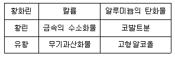
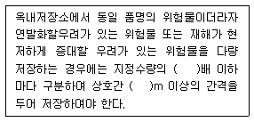
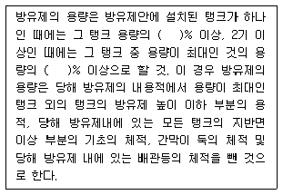
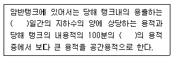
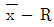

위험물기능장 (2012-07-22 기출문제)
1과목: 임의구분
1. 트리에틸알루미늄을 200℃ 이상으로 가열하였을 때 발생하는 가연성 가스와 트리에틸알루미늄이 염산과 반응하였을 때 발생하는 가연성 가스의 명칭을 차례대로 나타낸 것은?
- 에틸렌, 메탄
- 아세틸렌, 메탄
- 에틸렌, 에탄
- 아세틸렌, 에탄
(정답률: 72%)

2. 제조소등의 외벽 중 연소의 우려가 있는 외벽을 판단하는 기산점이 되는 것을 모두 옳게 나타낸 것은?
- ① 제조소등이 설치된 부지의 경계선,
② 제조소등에 인접한 도로의 중심선,
③ 제조소등의 외벽과 동일부지 내의 다른 건축물의 외벽간의 중심선 - ① 제조소등이 설치된 부지의 경계선,
② 제조소등에 인접한 도로의 경계선,
③ 제조소등의 외벽과 동일부지 내의 다른 건축물의 외벽간의 중심선 - ① 제조소등이 설치된 부지의 중심선,
② 제조소등에 인접한 도로의 중심선,
③ 동일부지 내의 다른 건축물의 외벽 - ① 제조소등이 설치된 부지의 중심선,
② 제조소등에 인접한 도로의 경계선,
③ 제조소등의 외벽과 인근부지의 다른 건축물의 외벽간의 중심선
(정답률: 71%)
3. 어떤 기체의 확산속도가 SO2의 2배일 때 이 기체의 분자량을 추정하면 얼마인가?
- 16
- 32
- 64
- 128
(정답률: 71%)
4. 과염소산, 질산, 과산화수소의 공통점이 아닌 것은?
- 다른 물질을 산화시킨다.
- 강산에 속한다.
- 산소를 함유한다.
- 불연성 물질이다.
(정답률: 88%)
5. 광전식분리형 감지기를 사용하여 자동화재탐지설비를 설치하는 경우 하나의 경계구역의 한변의 길이를 얼마이하로 하여야 하는가?
- 10m
- 100m
- 150m
- 300m
(정답률: 87%)
6. 위험물안전관리법상 위험등급이 나머지 셋과 다른 하나는?
- 아염소산염류
- 알킬알루미늄
- 알코올류
- 칼륨
(정답률: 82%)
7. 273℃에서 기체의 부피가 2ℓ 이다. 같은 압력에서 0℃ 일 때의 부피는 몇 ℓ 인가?
- 0.5
- 1
- 2
- 4
(정답률: 79%)
8. Ca3P2의 지정수량은 얼마인가?
- 50k
- 100kg
- 300kg
- 500kg
(정답률: 82%)
9. 제5류 위험물의 화재 시 적응성이 있는 소화설비는?
- 포소화설비
- 이산화탄소소화설비
- 할로겐화합물소화설비
- 분말소화설비
(정답률: 85%)
10. 물과 반응하였을 때 발생하는 가스가 유독성인 것은?
- 알루미늄
- 칼륨
- 탄화알루미늄
- 오황화린
(정답률: 71%)
11. 제1류 위험물의 위험성에 관한 설명으로 옳지 않은 것은?
- 과망간산나트륨은 에탄올과 혼촉발화의 위험이 있다.
- 과산화나트륨은 물과 반응 시 산소가스가 발생한다.
- 염소산나트륨은 산과 반응하면 유독가스가 발생한다.
- 질산암모늄 단독으로 안포폭약을 제조한다.
(정답률: 84%)
12. 이송취급소의 안전설비에 해당하지 않는 것은?
- 운전상태 감시장치
- 안전제어장치
- 통기장치
- 압력안전장치
(정답률: 72%)
13. 위험물제조소등의 옥내소화전설비의 설치기준으로 틀린것은?
- 수원의 수량은 옥내소화전이 가장 많이 설치된 층의 옥내소화전 설치개수(설치개수가 5개 이상인 경우는 5개)에 7.8m3를 곱한 양 이상이 되도록 설치할 것
- 옥내소화전은 제조소등의 건축물의 층마다 당해 층의 각 부분에서 하나의 호스접소구까지의 수평거리가 50m 이하가 되도록 설치할 것
- 옥내소화전설비는 각 층을 기준으로 하여 당해 층의 모든 옥내소화전(설치개수가 5개 이상인 경우는 5개의 옥내소화전)을 동시에 사용할 경우에 각 노즐선단의 방수압력이 350kPa 이상이고 방수량이 1분당 260ℓ 이상의 성능이 되도록 할 것
- 옥내소화전설비에는 비상전원을 설치할 것
(정답률: 84%)
14. 브롬산칼륨의 색상으로 옳은 것은?
- 백색
- 등적색
- 황색
- 청색
(정답률: 71%)
15. 위험물인 아세톤을 용기에 담아 운반하고자 한다. 다음 중 위험물안전관리법의 내용과 배치되는 것은?
- 지정수량의 10배라면 비중이 1.52인 질산을 다른용기에 수납하더라도 함께 적재. 운반 할 수 없다.
- 원칙적으로 기계로 하역되는 구조로 된 금속제 운반용기에 수납하는 경우 최대용적이 3000 리터 이다.
- 뚜껑탈착식 금속제드럼 운반용기에 수납하는 경우 최대 용적은 250리터이다.
- 유리용기, 플라스틱용기를 운반용기로 사용할 경우 내장용기로 사용할 수 없다.
(정답률: 77%)
16. 주유취급소의 변경허가 대상이 아닌 것은?
- 고정주유설비 또는 고정급유설비를 신설 또는 철거하는 경우
- 유리를 부착하기 위하여 담의 일부를 철거하는 경우
- 고정주유설비 또는 고정급유설비의 위치를 이전하는 경우
- 지하에 설치한 배관을 교체하는 경우
(정답률: 81%)
17. 마그네슘과 염산이 반응 할 때 발화의 위험이 있는 이유로 가장 적합한 것은?
- 열전도율이 낮기 때문이다.
- 산소가 발생하기 때문이다.
- 많은 반응열이 발생하기 때문이다.
- 분진 폭발의 민감성 때문이다.
(정답률: 84%)
18. 제2류 위험물 중 철분 또는 금속분을 수납한 운반용기의 외부에 표시해야하는 주의사항으로 옳은 것은?
- 화기엄금 및 물기엄금
- 화기주의 및 물기엄금
- 가연물접촉주의 및 화기엄금
- 가연물접촉주의 및 화기주의
(정답률: 72%)
19. 이산화탄소소화설비가 적응성이 있는 위험물은?
- 제1류 위험물
- 제3류 위험물
- 제4류 위험물
- 제5류 위험물
(정답률: 77%)
20. 제2류 위험물에 대한 설명 중 틀린 것은?
- 모두 가연성 물질이다.
- 모두 고체이다.
- 모두 주수소화가 가능하다.
- 지정수량의 단위는 모두 kg 이다.
(정답률: 87%)
2과목: 임의구분
21. 질산암모늄에 대한 설명으로 옳지 않은 것은?
- 열분해 시 가스를 발생한다.
- 물에 녹을 때 발열반응을 나타낸다.
- 물보다 무거운 고체상태의 결정이다.
- 급격히 가열하면 단독으로도 폭발할 수 있다.
(정답률: 81%)
22. 인화칼슘과 탄화칼슘이 각각 물과 반응하였을 때 발생하는 가스를 차례대로 옳게 나열한 것은?
- 포스겐, 아세틸렌
- 포스겐, 에틸렌
- 포스핀, 아세틸렌
- 포스핀, 에틸렌
(정답률: 85%)
23. 다음중 옥내저장소에 위험물을 저장하는 제한 높이가 가장 낮은 경우는?
- 기계에 의하여 하역하는 구조로 된 용기만을 겹쳐 쌓는 경우
- 중유를 수납하는 용기만을 겹쳐 쌓는 경우
- 아마인유를 수납하는 용기만을 겹쳐 쌓는 경우
- 적린을 수납하는 용기만을 겹쳐 쌓는 경우
(정답률: 80%)
24. 다음 중 1기압에 가장 가까운 값을 갖는 것은?
- 760cmHg
- 101.3Pa
- 29.92psi
- 1033.6cmH2O
(정답률: 82%)
25. 과산화벤조일(벤조일퍼옥사이드)의 화학식을 옳게 나타낸 것은?
- CH3ONO2
- (CH3COC2H5)2O2
- (CH3CO)2O2
- (C6H5CO)2O2
(정답률: 71%)
26. 다음 표의 물질 중 제2류 위험물에 해당하는 것은 모두 몇 개인가?

- 2
- 3
- 4
- 5
(정답률: 77%)
27. 산화프로필렌에 대한 설명 중 틀린 것은?
- 무색의 휘발성 액체이다.
- 증기의 비중은 공기보다 작다.
- 인화점은 약 -37℃ 이다.
- 비점은 약 34℃ 이다.
(정답률: 78%)
28. 완공검사의 신청시기에 대한 설명으로 옳은 것은?
- 이동탱크저장소는 이동저장탱크의 제작 중에 신청한다.
- 이송취급소에서 지하에 매설하는 이송배관 공사의 경우는 전체의 이송배관 공사를 완료한 후 에 신청한다.
- 지하탱크가 있는 제조소등은 당해 지하탱크를 매설한 후에 신청한다.
- 이송취급소에서 하천에 매설하는 이송배관의 공사의 경우에는 이송배관을 매설하기 전에 신청한다.
(정답률: 85%)
29. 위험물안전관리법령에 관한 내용으올 다음 ( )안에 알맞은 수치를 차례대로 나타낸 것은?

- 10, 0.3
- 10, 1
- 100, 0.3
- 100, 1
(정답률: 66%)
30. 주유취급소 설치자가 변경허가를 받지 않고 주유취급소의 방화담 중 도로에 접한 부분을 철거한 사실이 기술기준에 부적합하여 적발된 경우에 위험물안전관리법상 조치사항으로 가장 적합한 것은?
- 변경허가 위반행위에 따른 형사처벌, 행정처분 및 복구명령을 병과한다.
- 변경허가 위반행위에 따른 행정처분 및 복구명령을 병과한다.
- 변경허가 위반행위에 따른 형사처벌 및 복구명령을 병과한다.
- 변경허가 위반행위에 따른 형사처벌 및 행정처분을 병과한다.
(정답률: 80%)
31. 알칼리금속의 원자반지름 크기를 큰 순서대로 나타낸 것은?
- Li ＞ Na ＞ K
- K ＞ Na ＞ Li
- Na ＞ Li ＞ K
- K ＞ Li ＞ Na
(정답률: 77%)
32. 유량을 측정하는 계측기구가 아닌 것은?
- 오리피스 미터
- 마노미터
- 로타미터
- 벤츄리 미터
(정답률: 78%)
33. 다음 중 지정수량이 가장 작은 것은?
- 중크롬산염류
- 철분
- 인화성고체
- 질산염류
(정답률: 75%)
34. 위험물의 운반에 관한 기준에서 정한 유별을 달리하는 위험물의 혼재기준에 따르면 1가지 다른 유별의 위험물과만 혼재가 가능한 위험물은? (단, 지정수량의 1/10 을 초과하는 경우이다.)
- 제1류
- 제2류
- 제4류
- 제5류
(정답률: 86%)
35. 위험물안전관리법상 위험등급 Ⅰ에 속하면서 제5류 위험물인 것은?
- CH3ONO2
- C6H2CH3(NO2)3
- C6H4(NO)2
- N2H4∙HCl
(정답률: 70%)
36. 옥외탱크저장소를 설치함에 있어서 탱크안전성능검사 중 용접부검사의 대상이 되는 옥외저장탱크를 옳게 설명한 것은?
- 용량이 100만리터 이상인 액체위험물 탱크
- 액체위험물은 저장. 취급하는 탱크 중 고압가스 안전관리법에 의한 특정설비에 관한 검사에 합격한 탱크
- 액체위험물을 저장. 취급하는 탱크 중 산업안전보건법에 의한 성능검사에 합격한 탱크
- 용량에 상관없이 액체위험물을 저장. 취급하는 탱크
(정답률: 63%)
37. 제2류 위험물로 금속이 덩어리 상태일 때보다 가루상태일 때 연소위험성이 증가하는 이유가 아닌 것은?
- 유동성의 증가
- 비열의 증가
- 정전기 발생 위험성 증가
- 비표면적의 증가
(정답률: 85%)
38. 인화성액체위험률(CS2 는 제외)을 저장하는 옥외 탱크저장소에서 방유제의 용량에 대해 다음 ( )안에 알맞은 수치를 차례대로 나열한 것은?

- 100, 100
- 100, 110
- 110, 100
- 110, 110
(정답률: 88%)
39. 다음 중 가장 강한 산은?
- HClO4
- HClO3
- HClO2
- HClO
(정답률: 90%)
40. 위험물안전관리법령에 따른 제1류 위험물의 운반 및 위험물제조소등에서 저장. 취급에 관한 기준으로 옳은 것은? (단, 지정수량의 10배인 경우이다.)
- 제6류 위험물과는 운반 시 혼재할 수 있으며, 적절한 조치를 취하면 같은 옥내저장소에 저장할 수 있다.
- 제6류 위험물과는 운반 시 혼재할 수 있으나, 같은 옥내저장소에 저장 할 수는 없다.
- 제6류 위험물과는 운반 시 혼재할 수 없으나, 적절한 조치를 취하면 같은 옥내저장소에 저장할 수 있다.
- 제6류 위험물과는 운반 시 혼재할 수 없으며, 같은 옥내저장소에 저장할 수도 없다.
(정답률: 88%)
3과목: 임의구분
41. 제조소등의 소화설비를 위한 소요단위 산정에 있어서 1소요단위에 해당하는 위험물의 지정수량 배수와 외벽이 내화구조인 제조소의 건축물 연면적을 각각 옳게 나타낸것은?
- 10배, 100m2
- 100배, 100m2
- 10배, 150m2
- 100배, 150m2
(정답률: 68%)
42. 열처리작업등의 일반취급소를 건축물 내에 구획실 단위로 설치하는데 필요한 요건으로서 옳지 않은 것은?
- 취급하는 위험물의 수량은 지정수량의 30배 미만일것
- 위험물이 위험한 온도에 이르는 것을 경보할 수 있는 장치를 설치할 것.
- 열처리 또는 방전가공을 위하여 인화점 70℃ 이상의 제4류 위험물을 취급하는 것일것
- 다른 작업장의 용도로 사용되는 부분과의 사이에는 내화구조로 된 격벽을 설치하되, 격벽의 양단 및 상단이 외벽 또는 지붕으로부터 50cm 이상 돌출되도록 할 것
(정답률: 61%)
43. 이동탱크저장소에 설치하는 방파판의 기능으로 옳은 것은?
- 출렁임 방지
- 유증기 발생의 억제
- 정전기 발생 제거
- 파손 시 유출 방지
(정답률: 87%)
44. 0.2N HCl 500 ㎖에 물을 가해 1ℓ로 하였을 때 pH는 약 얼마인가?
- 1.0
- 1.2
- 1.8
- 2.1
(정답률: 76%)
45. 인화점이 0℃ 보다 낮은 물질이 아닌 것은?
- 아세톤
- 톨루엔
- 휘발유
- 벤젠
(정답률: 67%)
46. 포소화설비의 포방출구 중 고정지붕구조의 탱크에 저부포주입법을 이용하는 것으로서 송포관으로부터 포를 방출하는 방식은?
- Ⅰ형
- Ⅱ형
- Ⅲ형
- 특형
(정답률: 63%)
47. 과망간산칼륨과 묽은 황산이 반응하였을 때 생성물이 아닌 것은?
- MnO2
- K2SO4
- MnSO4
- O2
(정답률: 71%)
48. 지정수량 이상 위험물의 임시 저장. 취급기준에 대한 설명으로 옳은 것은?
- 군부대가 군사목적으로 임시로 저장. 취급하는 경우에는 180일을 초과하지 못한다.
- 공사장의 경우에는 공사가 끝나는 날까지 저장. 취급할 수 있다.
- 임시 저장.취급기간은 원칙적으로 180일 이내에서 할 수 있다.
- 임시 저장.취급에 관한 기준은 시.도별로 다르게 정 할 수 있다.
(정답률: 80%)
49. 위험물안전관리법령상 품명이 질산에스테르류에 해당하는 것은?
- 피크린산
- 니트로셀룰로오스
- 트리니트로톨루엔
- 트리니트로벤젠
(정답률: 82%)
50. 메틸에틸케톤에 관한 설명으로 틀린 것은?
- 인화가 용이한 가연성 액체이다.
- 완전연소 시 메탄과 이산화탄소를 생성한다.
- 물보다 가벼운 휘발성 액체이다.
- 증기는 공기보다 무겁다.
(정답률: 64%)
51. 위험물안전관리법령에서 정하는 유별에 따른 위험물의 성질에 해당하지 않는 것은?
- 산화성고체
- 산화성액체
- 가연성고체
- 가연성액체
(정답률: 82%)
52. 위험물탱크의 공간용적에 관한 기준에 대해 다음 ( )안에 알맞은 수치는?

- 7, 1
- 7, 5
- 10, 1
- 10, 5
(정답률: 81%)
53. CH3CHO 에 대한 설명으로 옳지 않은 것은?
- 끓는점이 상온(25℃) 이하이다.
- 완전연소 시 이산화탄소와 물이 생성된다.
- 은, 수은과 반응하면 폭발성 물질을 생성한다.
- 에틸알코올을 환원시키거나 아세트산을 산화시켜 제조한다.
(정답률: 59%)
54. 위험물 시설에 설치하는 소화설비와 특성 등에 관한 설명 중 위험물 관련 법규내용에 적합한 것은?
- 제4류 위험물을 저장하는 옥외저장탱크에 포소화설비를 설치하는 경우에는 이동식으로 할 수 있다,.
- 옥내소화전설비∙스피링클러설비 및 이산화탄소 소화설비의 배관은 전용으로 하되 예외규정이 있다.
- 옥내소화전설비와 옥외소화전설비는 동결방지조치가 가능한 장소라면 습식으로 설치하여야 한다.
- 물분무소화설비와 스프링클러설비의 기동장치에 관한 설치기준은 그 내용이 동일하지 않다.
(정답률: 79%)
55. 축의 완성지름, 철사의 인장강도, 아스피린 순도와 같은 데이터를 관리하는 가장 대표적인 관리도는?
- c 관리도
- nP 관리도
- u 관리도

관리도
(정답률: 71%)
56. 로트의 크기가 시료의 크기에 비해 10배 이상 클때, 시료의 크기와 합격판정개수를 일정하게 하고 로트의 크기를 증가시킬 경우 검사특성곡선의 모양 변화에 대한 설명으로 가장 적절한 것은?
- 무한대로 커진다.
- 별로 영향을 미치지 않는다.
- 샘플링 검사의 판별 능력이 매우 좋아진다.
- 검사특성곡선의 기울기 경사가 급해진다.
(정답률: 84%)
57. 작업시간 측정방법 중 직접측정법은?
- PTS법
- 경험견적법
- 표준자료법
- 스톱워치법
(정답률: 81%)
58. 준비작업시간 100분, 개당 정미작업시간 15분, 로트 크기 20일 때 1개당 소요작업시간은 얼마인가? (단, 여유시간은 없다고 가정한다.)
- 15분
- 20분
- 35분
- 45분
(정답률: 69%)
59. 소비자가 요구하는 품질로서 설계와 판매정책에 반영되는 품질을 의미하는 것은?
- 시장품질
- 설계품질
- 제조품질
- 규격품질
(정답률: 86%)
60. 다음 중 샘플링 검사보다 전수검사를 실시하는 것이 유리한 경우는?
- 검사항목이 많은 경우
- 파괴검사를 해야 하는 경우
- 품질특성치가 치명적인 결점을 포함하는 경우
- 다수 다량의 것으로 어느 정도 부적합품이 섞여도 괜찮을 경우
(정답률: 85%)
트리에틸알루미늄이 염산과 반응하면 알루미늄 염과 에탄 가스가 발생합니다. 이는 치환 반응에 의한 것입니다.
따라서 정답은 "에틸렌, 에탄" 입니다.